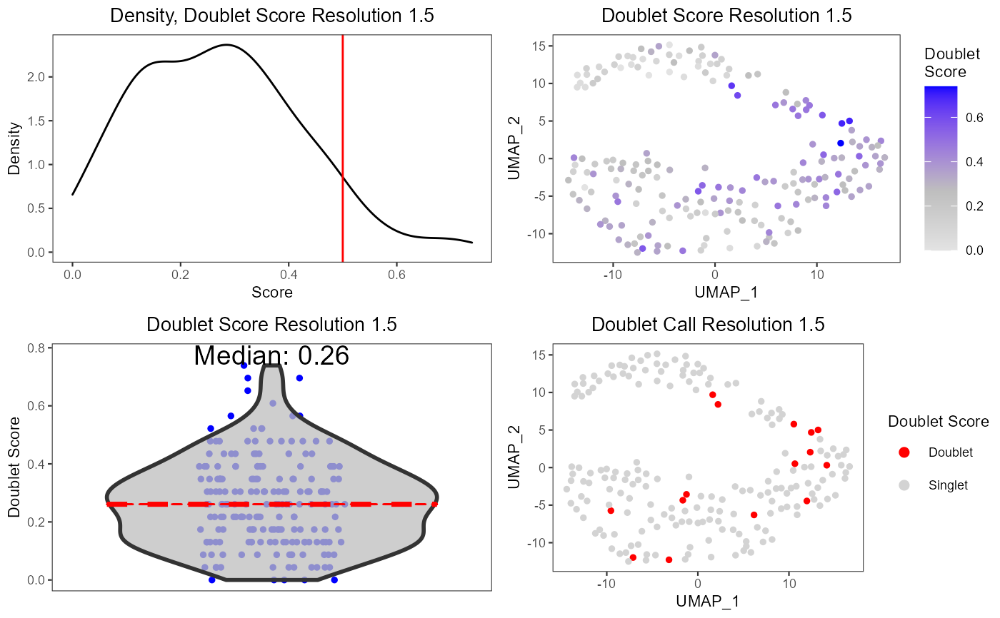

A wrapper function which visualizes outputs from the runDoubletFinder function stored in the colData slot of the SingleCellExperiment object via various plots.
plotDoubletFinderResults( inSCE, sample = NULL, shape = NULL, groupBy = NULL, combinePlot = "all", violin = TRUE, boxplot = FALSE, dots = TRUE, reducedDimName = NULL, xlab = NULL, ylab = NULL, dim1 = NULL, dim2 = NULL, bin = NULL, binLabel = NULL, defaultTheme = TRUE, dotSize = 1, transparency = 1, titleSize = 18, axisLabelSize = 18, axisSize = 15, legendSize = 15, legendTitleSize = 16, relHeights = c(1.5, 1, 1), relWidths = c(1, 1, 1), plotNCols = NULL, plotNRows = NULL, plotLabels = "default", plotLabelSize = 20, plotLabelPositionX = NULL, plotLabelPositionY = NULL, samplePerColumn = TRUE, sampleRelHeights = 1, sampleRelWidths = 1 )
| inSCE | Input SingleCellExperiment object with saved dimension reduction components or a variable with saved results from runDoubletFinder. Required. |
|---|---|
| sample | Character vector. Indicates which sample each cell belongs to. Default NULL. |
| shape | If provided, add shapes based on the value. |
| groupBy | Groupings for each numeric value. A user may input a vector equal length to the number of the samples in the SingleCellExperiment object, or can be retrieved from the colData slot. Default NULL. |
| combinePlot | Must be either "all", "sample", or "none". "all" will combine all plots into a single .ggplot object, while "sample" will output a list of plots separated by sample. Default "all". |
| violin | Boolean. If TRUE, will plot the violin plot. Default TRUE. |
| boxplot | Boolean. If TRUE, will plot boxplots for each violin plot. Default TRUE. |
| dots | Boolean. If TRUE, will plot dots for each violin plot. Default TRUE. |
| reducedDimName | Saved dimension reduction name in the SingleCellExperiment object. Required. |
| xlab | Character vector. Label for x-axis. Default NULL. |
| ylab | Character vector. Label for y-axis. Default NULL. |
| dim1 | 1st dimension to be used for plotting. Can either be a string which specifies the name of the dimension to be plotted from reducedDims, or a numeric value which specifies the index of the dimension to be plotted. Default is NULL. |
| dim2 | 2nd dimension to be used for plotting. Can either be a string which specifies the name of the dimension to be plotted from reducedDims, or a numeric value which specifies the index of the dimension to be plotted. Default is NULL. |
| bin | Numeric vector. If single value, will divide the numeric values into the `bin` groups. If more than one value, will bin numeric values using values as a cut point. |
| binLabel | Character vector. Labels for the bins created by the `bin` parameter. Default NULL. |
| defaultTheme | Removes grid in plot and sets axis title size to 10 when TRUE. Default TRUE. |
| dotSize | Size of dots. Default 1. |
| transparency | Transparency of the dots, values will be 0-1. Default 1. |
| titleSize | Size of title of plot. Default 18. |
| axisLabelSize | Size of x/y-axis labels. Default 18. |
| axisSize | Size of x/y-axis ticks. Default 15. |
| legendSize | size of legend. Default 15. |
| legendTitleSize | size of legend title. Default 16. |
| relHeights | Relative heights of plots when combine is set. |
| relWidths | Relative widths of plots when combine is set. |
| plotNCols | Number of columns when plots are combined in a grid. |
| plotNRows | Number of rows when plots are combined in a grid. |
| plotLabels | labels to each plot. If set to "default", will use the name of the samples as the labels. If set to "none", no label will be plotted. |
| plotLabelSize | size of labels |
| plotLabelPositionX | Numeric vector. The X position of the plot label. |
| plotLabelPositionY | Numeric vector. The Y position of the plot label. |
| samplePerColumn | If TRUE, when there are multiple samples and combining by "all", the output .ggplot will have plots from each sample on a single column. Default TRUE. |
| sampleRelHeights | If there are multiple samples and combining by "all", the relative heights for each plot. |
| sampleRelWidths | If there are multiple samples and combining by "all", the relative widths for each plot. |
data(scExample, package="singleCellTK") sce <- sce[, colData(sce)$type != "EmptyDroplet"] sce <- getUMAP(inSCE=sce, useAssay="counts", reducedDimName="UMAP") sce <- runDoubletFinder(sce)#>plotDoubletFinderResults(inSCE=sce, reducedDimName="UMAP")